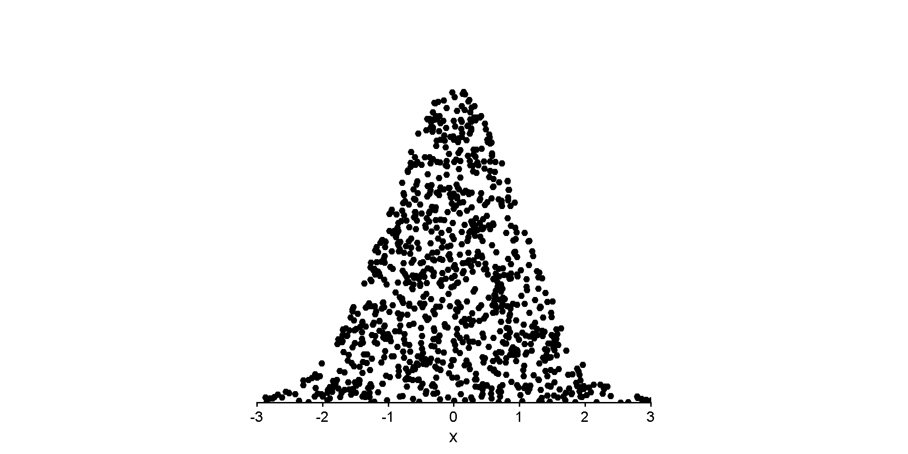
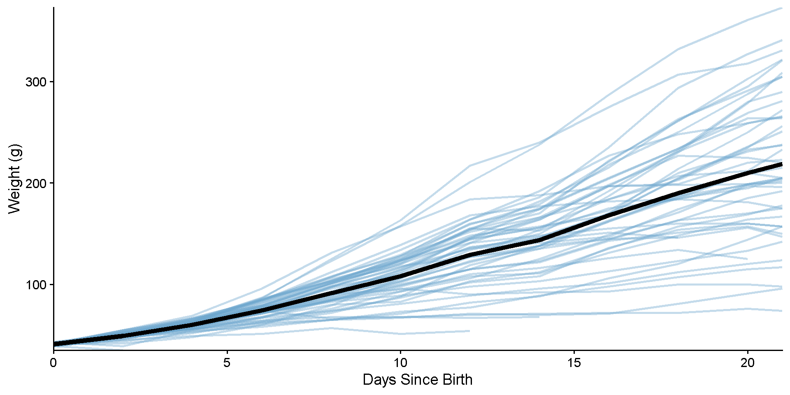

SmokesFct
ExerciseFct Yes No
High 0 14
Moderate 6 53
Low 5 32Sampling Distributions
PSYC 2020-A01 / PSYC 6022-A01 | 2025-09-26 | Lab 6
Jessica Helmer
Outline
- Assignment 5 Review
- Sampling Distributions
Learning objectives:
R: Making data tidy, line graphs
Housekeeping
Lecture the next couple weeks will be a little more theoretical
We’ll be doing a bit more general data science, analytics stuff in lab
We’ll be back matched up to do some modeling!
Lab 5 Review
Internal Structure of data.frames
Represented as a list of vectors (vectors being the columns in our data)
Makes operating on columns easy!
Lab 5 Review
Summarizing Factor Variables
Back to the does exercise depend on substance use (smoking) question!
Assignment 5 Review: Packages and Knitting
Remove or comment out install.packages() from your RMarkdown file when you’re ready to knit
But make sure you’re reading the instructions closely (including which packages to library())
The knitting program doesn’t know from where to install packages by default
○ But no real reason to keep installation code after installing for our purposes
Assignment 5 Review: summarize() review
summarize(data, .by = grouping_variable, summarized_var_1 = someSummaryFunction(var_1))
Example: trying to summarize scores across students, by test
summary() gives us printed output, summarize() gives us a condensed dataframe that we can keep working with
Sampling Distributions
Important topic in statistics! Help us make inferences about the estimates we calculate
Sample Distribution
Distribution of the data within our sample
Sample Distribution
(More theoretical) distribution of our statistic over repeated sampling
Population
Sample
Sample
Sample
Sample
Sample
Sample
Sample
Sample
Sample
Sample
Tidy Data
In a lot of cases, your data will not come in tidy
Need to know how to work with this!
Let Us Review…
What are the tidy principles?
Three rules to a tidy dataset
Each variable is a column; each column is a variable.
Each observation is a row; each row is an observation.
Each value is a cell; each cell is a single value.

Long vs. Wide Data
Long: each observation is a row (tidy)
○ Observation does not necessarily mean “person”
○ Can be within-person measurements over time
Wide: columns might represent different “values” of a variables
Long vs. Wide Data
# A tibble: 9 × 3
person book score
<chr> <chr> <int>
1 Harry book 1 3
2 Harry book 2 2
3 Harry book 3 3
4 Ron book 1 1
5 Ron book 2 2
6 Ron book 3 2
7 Hermione book 1 2
8 Hermione book 2 2
9 Hermione book 3 3# A tibble: 3 × 4
person `book 1` `book 2` `book 3`
<chr> <int> <int> <int>
1 Harry 3 2 3
2 Ron 1 2 2
3 Hermione 2 2 3Wide data common in spreadsheets, data from survey platforms
Long data typically easier to work with
Key Functions
Wide to Long
pivot_longer()
longdat <- dat %>%
pivot_longer(cols = c("book 1", "book 2", "book 3"),
names_to = "book", values_to = "score")
longdat# A tibble: 9 × 3
person book score
<chr> <chr> <int>
1 Harry book 1 3
2 Harry book 2 2
3 Harry book 3 3
4 Ron book 1 1
5 Ron book 2 2
6 Ron book 3 2
7 Hermione book 1 2
8 Hermione book 2 2
9 Hermione book 3 3Key Functions
Wide to Long
pivot_longer()
○
cols = set of columns to pivot
○
names_to = name of new column with the column names from before
○
values_from = name of new column with the values from before
Long to Wide
pivot_wider()
○
names_from = column with values to be column names
○
values_from = column with values to be in those columns
Some Examples: Example 1
# A tibble: 6 × 4
country year cases population
<chr> <dbl> <dbl> <dbl>
1 Afghanistan 1999 745 19987071
2 Afghanistan 2000 2666 20595360
3 Brazil 1999 37737 172006362
4 Brazil 2000 80488 174504898
5 China 1999 212258 1272915272
6 China 2000 213766 1280428583Looks good!
Some Examples: Example 2
# A tibble: 12 × 4
country year type count
<chr> <dbl> <chr> <dbl>
1 Afghanistan 1999 cases 745
2 Afghanistan 1999 population 19987071
3 Afghanistan 2000 cases 2666
4 Afghanistan 2000 population 20595360
5 Brazil 1999 cases 37737
6 Brazil 1999 population 172006362
7 Brazil 2000 cases 80488
8 Brazil 2000 population 174504898
9 China 1999 cases 212258
10 China 1999 population 1272915272
11 China 2000 cases 213766
12 China 2000 population 1280428583To RStudio!!
Some Examples: Example 2
Example code
# A tibble: 6 × 4
country year cases population
<chr> <dbl> <dbl> <dbl>
1 Afghanistan 1999 745 19987071
2 Afghanistan 2000 2666 20595360
3 Brazil 1999 37737 172006362
4 Brazil 2000 80488 174504898
5 China 1999 212258 1272915272
6 China 2000 213766 1280428583Some Examples: Example 3
# A tibble: 6 × 3
country year rate
<chr> <dbl> <chr>
1 Afghanistan 1999 745/19987071
2 Afghanistan 2000 2666/20595360
3 Brazil 1999 37737/172006362
4 Brazil 2000 80488/174504898
5 China 1999 212258/1272915272
6 China 2000 213766/1280428583It’s unfortunately pretty common to get data that has multiple values in a cell!
New function!
separate_wider_delim()
○
delim = character to split on
To RStudio!!
Some Examples: Example 3
Example code
table3 |>
separate_wider_delim(cols = rate, delim = "/",
names = c("cases", "population")) |>
mutate(cases = as.numeric(cases),
population = as.numeric(population),
rate = cases / population)# A tibble: 6 × 5
country year cases population rate
<chr> <dbl> <dbl> <dbl> <dbl>
1 Afghanistan 1999 745 19987071 0.0000373
2 Afghanistan 2000 2666 20595360 0.000129
3 Brazil 1999 37737 172006362 0.000219
4 Brazil 2000 80488 174504898 0.000461
5 China 1999 212258 1272915272 0.000167
6 China 2000 213766 1280428583 0.000167 as.numeric() attempts to convert to numeric data type
If you create columns in a mutate() call, you can refer to those columns in the same call after you create them
Some Examples: Example 4
# A tibble: 3 × 3
country `1999` `2000`
<chr> <dbl> <dbl>
1 Afghanistan 745 2666
2 Brazil 37737 80488
3 China 212258 213766# A tibble: 3 × 3
country `1999` `2000`
<chr> <dbl> <dbl>
1 Afghanistan 19987071 20595360
2 Brazil 172006362 174504898
3 China 1272915272 1280428583Sometimes we get data in multiple pieces
New function!
full_join()
○
x = left dataframe to join
○
y = right dataframe to join
○
by = character, matching column(s) in both dataframes
○ ‘join by’ columns need to have exact same name in both
To RStudio!!
Some Examples: Example 4
Example code
table4a_long <- table4a %>%
pivot_longer(c("1999", "2000"),
names_to = "year", values_to = "cases")
table4b_long <- table4b %>%
pivot_longer(c("1999", "2000"),
names_to = "year", values_to = "cases")
full_join(table4a_long, table4b_long, by = c("country", "year"))# A tibble: 6 × 4
country year cases.x cases.y
<chr> <chr> <dbl> <dbl>
1 Afghanistan 1999 745 19987071
2 Afghanistan 2000 2666 20595360
3 Brazil 1999 37737 172006362
4 Brazil 2000 80488 174504898
5 China 1999 212258 1272915272
6 China 2000 213766 1280428583full_join(
table4a %>%
pivot_longer(c("1999", "2000"),
names_to = "year", values_to = "cases"),
table4b %>%
pivot_longer(c("1999", "2000"),
names_to = "year", values_to = "cases"),
by = c("country", "year")
)# A tibble: 6 × 4
country year cases.x cases.y
<chr> <chr> <dbl> <dbl>
1 Afghanistan 1999 745 19987071
2 Afghanistan 2000 2666 20595360
3 Brazil 1999 37737 172006362
4 Brazil 2000 80488 174504898
5 China 1999 212258 1272915272
6 China 2000 213766 1280428583Some Examples: Example 5
# A tibble: 6 × 4
country century year rate
<chr> <chr> <chr> <chr>
1 Afghanistan 19 99 745/19987071
2 Afghanistan 20 00 2666/20595360
3 Brazil 19 99 37737/172006362
4 Brazil 20 00 80488/174504898
5 China 19 99 212258/1272915272
6 China 20 00 213766/1280428583paste() and paste0() combine characters into one string
○
paste() adds a space between inputs
○
paste0() does not
To RStudio!!
Some Examples: Example 5
Example code
table5 |>
separate_wider_delim(cols = rate, delim = "/",
names = c("cases", "population")) |>
mutate(cases = as.numeric(cases),
population = as.numeric(population),
rate = cases / population,
year = paste0(century, year) |> as.numeric(),
.keep = "unused")# A tibble: 6 × 5
country year cases population rate
<chr> <dbl> <dbl> <dbl> <dbl>
1 Afghanistan 1999 745 19987071 0.0000373
2 Afghanistan 2000 2666 20595360 0.000129
3 Brazil 1999 37737 172006362 0.000219
4 Brazil 2000 80488 174504898 0.000461
5 China 1999 212258 1272915272 0.000167
6 China 2000 213766 1280428583 0.000167 Selecting Functions
Sometimes, we want to select many columns (to pivot, to remove, etc.)
Notice the documentation for pivot_longer()
<tidy-select> functions
○
starts_with() and ends_with()
Selecting Functions
Simple example, but…
Visualize: ggplot2 line graphs
Let’s see some chicks grow!

Visualize: ggplot2 line graphs

Visualize: ggplot2 line graphs
Visualize: ggplot2 line graphs
Visualize: ggplot2 line graphs
Visualize: ggplot2 line graphs
Visualize: ggplot2 line graphs

ggplot(ChickWeight, aes(x = Time, y = weight, group = Chick)) +
geom_line(alpha = .4, linewidth = 1, color = "skyblue3") +
stat_summary(aes(x = Time, y = weight), geom = "line",
fun = mean, inherit.aes = F, linewidth = 2) +
coord_cartesian(expand = F) +
labs(x = "Days Since Birth", y = "Weight (g)") +
theme_classic(base_size = 14)Great! Now let’s do some finishing touches